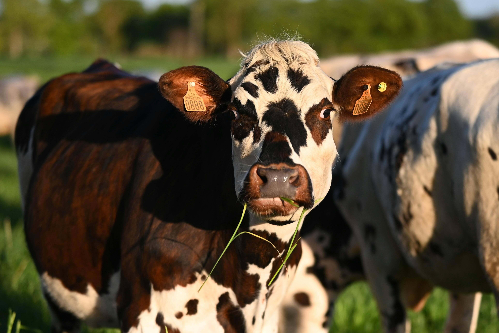
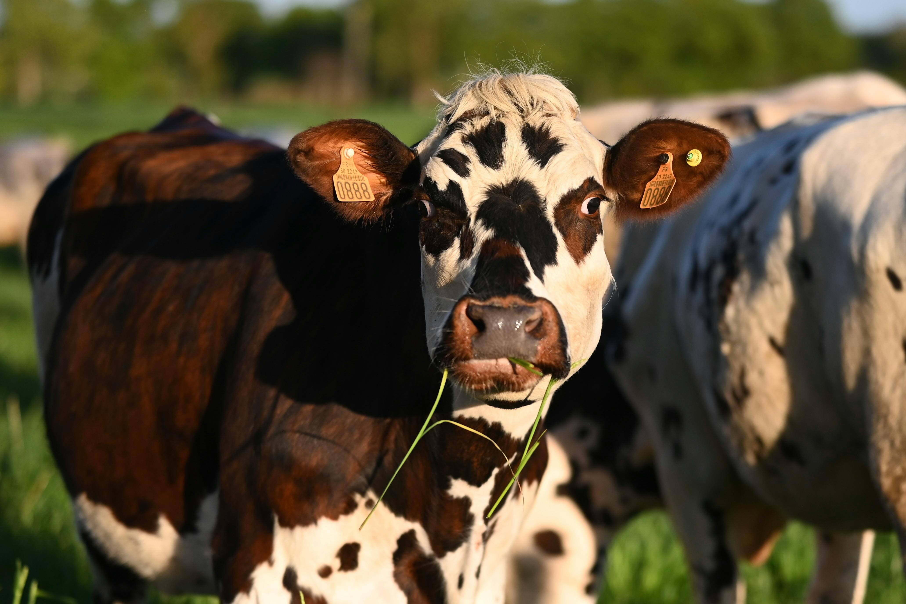
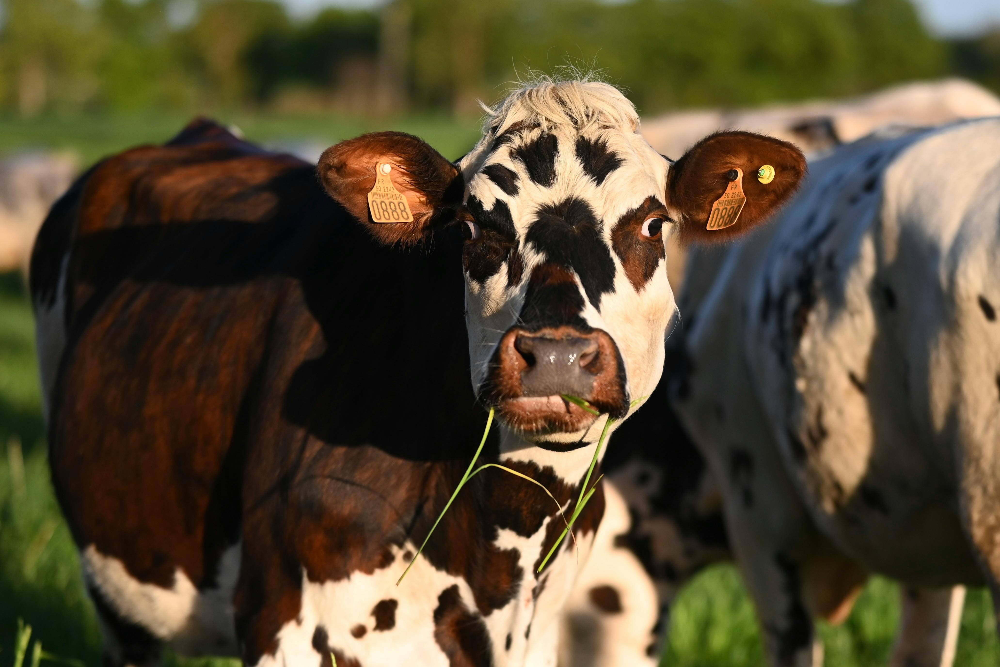

Área Rural
 

A área rural é marcada pela natureza, agricultura e um ritmo de vida mais tranquilo. Aqui, as pessoas têm uma conexão mais direta com o meio ambiente e dependem da terra para seu sustento.
O impacto da urbanização no campo e na cidade.

A área rural é marcada pela natureza, agricultura e um ritmo de vida mais tranquilo. Aqui, as pessoas têm uma conexão mais direta com o meio ambiente e dependem da terra para seu sustento.

Já a área urbana é caracterizada pela grande concentração de pessoas, prédios, e a vida agitada. A urbanização promove o desenvolvimento industrial e comercial, mas também acarreta desafios como o aumento da poluição e da desigualdade.